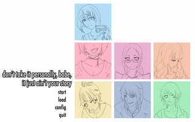

don't take it personally, babe, it just ain't your story
Dieser Artikel wurde für die folgenden Ubuntu-Versionen getestet:
Ubuntu 14.04 Trusty Tahr
Zum Verständnis dieses Artikels sind folgende Seiten hilfreich:
don't take it personally, babe, it just ain't your story  ist eine Visual Novel von Christine Love, aus deren Feder auch Cell Phone Love Letter und Digital: A Love Story stammen. Man spielt den Lehrer John Rook, der als Krankheitsvertretung in einer 11. Klasse eingesprungen ist. Durch einen Administrator erlangt man den kompletten Zugriff auf das soziale Netzwerk AmieConnect. Somit ist man in der Lage, die persönlichen Nachrichten der Schüler zu lesen...
ist eine Visual Novel von Christine Love, aus deren Feder auch Cell Phone Love Letter und Digital: A Love Story stammen. Man spielt den Lehrer John Rook, der als Krankheitsvertretung in einer 11. Klasse eingesprungen ist. Durch einen Administrator erlangt man den kompletten Zugriff auf das soziale Netzwerk AmieConnect. Somit ist man in der Lage, die persönlichen Nachrichten der Schüler zu lesen...
|  | |
| Menü | Spielszene |
Installation¶
Für die Version von der Projektseite muss man im Vorfeld die folgenden Pakete installieren [1]:
python
python-pygame (universe)
python-renpy (universe)
 mit apturl
mit apturl
Paketliste zum Kopieren:
sudo apt-get install python python-pygame python-renpy
sudo aptitude install python python-pygame python-renpy
Anschließend von scoutshonour.com  das Archiv für Linux herunterladen und entpacken [2] - z.B. nach ~/Spiele. Aus dem Installationsverzeichnis heraus kann das Spiel über
das Archiv für Linux herunterladen und entpacken [2] - z.B. nach ~/Spiele. Aus dem Installationsverzeichnis heraus kann das Spiel über don't take it personally, babe.sh gestartet [3] werden. Auf Wunsch einen Menüeintrag [4] vornehmen.
| Menü | |
| Menüpunkt | Beschreibung |
| "start" | Neues Spiel starten |
| "load" | Spielstand laden |
| "config" | Einstellungemenü |
| "quit" | Spiel beenden |
Tastenbelegung¶
| Tastenbelegungen | |
| Taste | Aktion |
 | Spielsteuerung |
 (Mausrad) (Mausrad) | Szene |
 /
H /
H | Spielmenü ein(ausblenden |
| F | Vollbild-/Fenstermodus |
| S | Bildschirmfoto erstellen - dieses wird im Installationsverzeichnis als .png-Datei abgespeichert. |
| Esc | Beenden/Zurück |
Details zur Steuerung sind der README.html zu entnehmen, welche im Installationsverzeichnis zu finden ist.

Infobox¶
| don't take it personally, babe, it just ain't your story | |
| Genre: | Adventure / Visual Novel |
| Sprache: | |
| Veröffentlichung: | 2011 |
| Entwicklerin: | Christine Love |
| Systemvoraussetzungen: | - |
| Medien: | Download |
| Läuft mit: | nativ |
- Erstellt mit Inyoka
-
 2004 – 2017 ubuntuusers.de • Einige Rechte vorbehalten
2004 – 2017 ubuntuusers.de • Einige Rechte vorbehalten
Lizenz • Kontakt • Datenschutz • Impressum • Serverstatus -
Serverhousing gespendet von